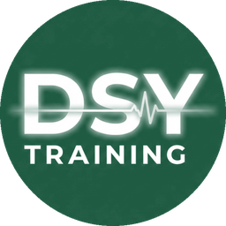

Walk-through scenarios with your own local details
Pick a walk-through scenario, then change the names, places and times to suit your station. Only those details change: the observations, treatment, doses and decisions stay exactly as approved.